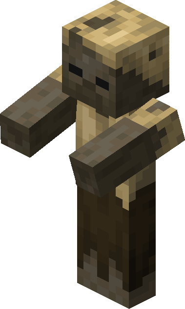

The Sandstorm Pharaoh
Scorching Desert Boss

| Type | Husk |
|---|---|
| HP | 25 |
| Attack | 6 |
| Defense | 1 |
| Speed | 2 |
| Size | 2×2 |
| Phase 2 | ≤ 50% HP |
| Dimension | Overworld |
The Sandstorm Pharaoh
Scorching Desert biome boss — ruler of buried sands.
The Sandstorm Pharaoh commands the shifting sands of the Scorching Desert, laying invisible mines and cursing the ground beneath the player’s feet. Every careless step can be your last in this treacherous arena.
Abilities
- Plant Mine: Places an invisible trap on a tile near the player, dealing 6 dmg on contact. Maximum of 4 active mines at once.
- Sand Burial: Creates a 2×2 quicksand zone at the player, stunning for 1 turn. Telegraphed 1 turn in advance.
- Sandstorm: 3×3 AoE at the player, dealing 3 dmg and applying –1 accuracy for 2 turns.
- Curse of the Sands: Marks the player — every tile the player moves off becomes quicksand for 3 turns.
Phase 2 — “Tomb Wrath”
Triggers at ≤ 50% HP. The Pharaoh drops 2 mines per turn (up from 1). Sand Burial enlarges to a 3×3 zone. Summons 2 Husks (8 HP / 3 ATK) once on phase transition.
Strategy
Step carefully — mines are invisible and the arena fills quickly. Curse of the Sands punishes careless movement, so plan your path before committing to a direction rather than reacting on the fly.